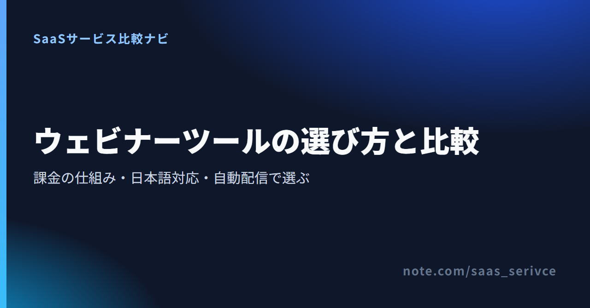

ウェビナーの開催を任されたとき、最初に迷うのは「いつものWeb会議ツールで足りるのか、専用ツールを契約すべきか」です。専用ツールの料金ページを開いても、参加した人数で払うもの、出席者の枠を買うもの、見積もりしか出ていないものが混ざっていて、同じ物差しでは並べられません。
ここで取り上げるのは7つです。海外製でも日本語サイトと円建て料金があるZoom Webinars・Webex Webinars、国産のネクプロ・V-CUBE セミナー、日本向けの窓口を持たない海外製のLivestorm・GetResponse・WebinarJamを、課金の仕組み・日本語で運用できる範囲・録画の自動配信で整理しました。運営者は7つとも契約していないため、公式サイトとヘルプに載っている情報をもとにまとめています。
総合順位は付けず、開催の目的と参加規模で4つに分けると、比べるべきツールは1〜2個まで絞れます。
WebinarJamを挙げるのは、月払い$99のBasicから、ライブ配信と録画の自動配信（EverWebinar）を1つの契約で使えるからです。講座や商品の販売ページ、会員サイトまで同じ会社の製品でそろえる道も残ります。
海外製のうち、お金をかけずに画面を確かめられるのはLivestormとGetResponseの2つです。WebinarJamは$1の有料トライアルになります。
LivestormはFreeプランを期限なしで使えます。最初にテスト用のイベントを作り、参加者の登録ページと案内メールが日本語で表示されるかを見てください。
GetResponseは無料アカウントを作ると、有料機能を試せる期間中に、本人と登壇者を含めて10人までのウェビナーを開けます。告知メールから登録、視聴までの流れを通しで試せます。
WebinarJamには14日間$1のトライアルがあります。公開画面の言語を日本語に設定し、参加者に見える画面を確認してから本契約を判断できます。
オンラインセミナー（Webセミナー）とウェビナーは同じものを指します。参加者が数十人で申込の管理が要らないならWeb会議ツールで足ります。事前登録・リマインド・視聴データ・録画配信が必要になった時点で、専用ツールを比べる段階に入ります。
Zoom Meetings・Google Meet・Microsoft Teams・YouTube Liveでもセミナーは開けます。会議用の Webex Free は￥0で使えますが、1回40分・100人までです。専用ツールとの違いは次の5点に出ます。
配信の形は大きく3つに分かれます。
同じ説明会を毎月開くなら、2回目以降を疑似ライブやオンデマンドに切り替えれば、登壇者の拘束時間を減らせます。
参加人数と料金だけで比べると判断を誤ります。課金が何に対してかかるかと、日本語が必要な範囲を先に確かめてください。
ウェビナーツールは、料金を数える単位がツールごとに違います。
来た人だけを数える方式は、年間の延べ参加者数が見込めるときに無駄が少なくなります。LivestormのProは最小でも400クレジットを年単位で先に買い、余った分は翌年に持ち越せません。年に数回・数十人規模なら枠の大半が余るので、Zoom Webinarsの1か月プランのように、1か月単位で契約できる形と比べてください。毎月決まった規模で開くなら、枠やプランで固定したほうが年間の予算を組めます。金額は後半の料金の章にまとめました。
日本語対応は、3つの層に分けて考えます。
参加者に届く部分を日本語にできれば、管理画面が英語でも運営は回せます。LivestormとWebinarJamは、参加者側の表示を日本語に設定できます。管理画面の操作やトラブル時の問い合わせまで日本語で済ませたいなら、電話とフォームの窓口があるネクプロや、配信スタッフごと任せるV-CUBE セミナーが候補になります。ZoomとWebexは日本語の公式サイトと円建ての料金を用意しています。
同じ内容の説明会や講座の体験会を繰り返すなら、録画を流せるかどうかで運営の手間が変わります。Webex Webinarsとネクプロは疑似ライブとオンデマンドの両方に対応し、LivestormはProプランで自動ウェビナーとオンデマンド配信を使えます。GetResponseはCreator以上で、GetResponse上で行ったライブの録画をオンデマンドで公開できます。
気をつけたいのは、同じ製品でもプランによって使えるかが分かれる点です。Zoomで事前収録の動画をライブのように流すには、Webinars では足りず、Webinars Plus 以上が必要です。WebinarJamの場合、録画の自動配信は姉妹製品のEverWebinarが受け持ち、含まれるのはBasic以上です。
ウェビナーは集客の入口なので、申込から開催後の追客までが途切れないかを見ます。ネクプロは申込ページの作成、ステップメール、Salesforce連携までを1つの製品に持っています。GetResponseは反対にメール配信ツールが本体で、その中でウェビナーを扱う作りです。WebinarJamも、同じ会社のKartraへ広げれば販売ページやメール配信までそろいます。すでにCRMやメール配信ツールを使っているなら、試用の段階で連携先の一覧を開き、参加者のデータをそこへ渡せるかを見ておきます。
ウェビナーのあとの追客をMAツールで自動化したい方は、こちらも参考にしてください。https://note.com/saas_serivce/n/nf8f140909c60
海外製はUSD建てのカード払いが基本で、LivestormはUSDとEURから通貨を選べます。国産の2つと、Zoom・Webexの日本向け料金は円建てです。年払いの自動更新と返金の扱いもツールごとに違い、Livestormは更新日を過ぎてから解約しても返金されません。支払いと解約の注意点は、後半の海外製の章で3つを並べて整理しています。
海外製は課金の仕組みと日本語の範囲で、国産は見積もりの中身とサポートの手厚さで選びます。 並びは順位ではなく、冒頭で分けた開催目的の順です。
社外向けのセミナーでも、参加者の多くがZoomに慣れていれば、当日の「入れない」という問い合わせは減らせます。Webinarsは単体では契約できず、会議用の Zoom Workplace プロに追加する形です。出席者はZoomアカウントがなくても参加でき、1回の開催は最大30時間まで、製品全体では最大100,000人の規模に対応します。
Zoom Workplace プロをすでに契約している会社なら、比べるのは出席者の枠の費用だけです。枠はプランを選ぶときに指定し、料金ページの金額は500名プランが基準になっています。年に数回しか開かないなら、年額より1か月プランのほうが合うかを比べます。
Webex Webinarsは価格を公開しておらず、問い合わせて見積もりを取る製品です。最大100,000人・ウェビナー無制限で、登録ページやブランディングページ、自動メールまで備えます。ライブに加えて疑似ライブとオンデマンド配信、字幕と翻訳にも対応しているため、海外拠点や日本語以外の参加者がいるセミナーでも候補に入ります。
参加者が100人前後の社内説明会なら、見積もりを取る前に、会議プランのStarter（150人まで）で足りないかを見ておくと遠回りをしません。会議の有料プランは管理ポータルからいつでも解約でき、請求期間の末まで使えます。
Livestormの特徴は課金の数え方です。1人が1セッションに参加すると1クレジットを使い、社内のチームメンバーと、登録だけして来なかった人は数えません。ライブ・リプレイ・オンデマンドのどれで見ても1回は1クレジットで、12か月単位で管理します。未使用分は翌年に繰り越せず、上限に達すると新しい参加者が入れなくなるので、その場合は上位の枠に変更します。Proでは1セッション最大4時間、ライブ参加は1イベント最大3,000人、同時に登壇できるのは25人です。
Freeプランは1イベント30分までなので、本番前のリハーサルや参加者画面の確認に使い、本番の長さに合わせてProへ移る流れになります。
GetResponseはメール配信ツールで、ウェビナーは告知メール・登録・開催後のフォローを同じ契約の中で回すための機能という位置づけです。メール配信の側では、無料アカウントでも連絡先500件・月2,500通まで送れ、ランディングページも月1,000訪問まで公開できます。有料機能は14日間、カード登録なしで試せます。
配信リストをこれから作る段階なら、無料アカウントでリストと登録用のページを先に用意し、ウェビナーを開く時点でCreatorへ上げる順番になります。
WebinarJamはライブ配信のウェビナーツールで、録画を決まった時刻に自動で流す部分は姉妹製品のEverWebinarが担います。プランは Starter・Basic・Professional・Enterprise の4段階で、月払いと年払いを選べます。講座や商品の販売ページ、会員サイト、メール配信までひとつにまとめたい場合は、同じ会社のオールインワン製品Kartraが選択肢に入ります。
日本発行のカードが使えるかは明記されていません。$1のトライアルを申し込む時点で、手持ちのカードが通るかを確かめておきます。
ネクプロは株式会社ネクプロが運営する国産のウェビナーツールです。ライブ、指定日時に録画を自動で流す疑似ライブ、オンデマンドに加え、ZoomやTeams、OBSを経由した外部ツールでの配信にも対応します。申込ページの作成からステップメール、有料セミナーのクレジットカード決済、会場受付用のQRコードまでを1つの製品で扱え、Salesforceとも連携できます。
資料請求や見積もりを頼むときは、有料セミナーの決済、会場受付のQRコード、Salesforce連携のうち、どれを使うつもりかを書き添えておきます。オンラインと会場を組み合わせたセミナーを開くなら、会場の受付まで同じ製品で管理できる点がネクプロを選ぶ理由になります。無料トライアルを申し込む際は、疑似ライブで録画を流す設定を試したいと伝えておけば、自動配信の使い勝手までつかめます。
V-CUBE セミナーは株式会社ブイキューブの製品で、ツール単体ではなく、配信スタジオと配信スタッフを含めたパッケージで販売するのが基本です。同時接続は最大26,000箇所。参加者はアプリを入れずにブラウザで視聴でき、ライブの途中から入った人が冒頭に戻って見られる追っかけ再生にも対応します。
セルフ型の月額ツールとは価格帯が違うため、比べる相手は、配信機材と担当者を社内で用意した場合の手間と費用です。
料金を公開しているセルフ型は4つで、Webex Webinarsとネクプロは見積もり制、V-CUBE セミナーはパッケージ価格です。 課金の単位がそろわないため、自分の年間の開催回数と参加人数を当てはめて見積もります。
1ドル=157円換算（執筆時点の目安。為替で変動）で、LivestormのPro 400クレジットは約18万8,000円/年、GetResponseのCreator（月払い）は約10,800円/月、WebinarJamのBasic（月払い）は約1万5,500円/月です。
参加者クレジット制と定員枠制は、金額だけでは比べられません。Livestormの400クレジットは延べ400人分なので、毎回30人が集まるセミナーなら年13回ほどで使い切る計算です。Zoom Webinarsは出席者の定員を年額か1か月単位で確保する形です。海外製の料金には消費税の扱い（リバースチャージなど）が絡むので、経理処理は税理士に確認してください。
Livestormは年払いの枠ごとの金額を、WebinarJamは月払いと年払いの差を、それぞれの料金ページで見比べられます。
Livestormは400から4,000クレジットまで枠が分かれています。過去のセミナーの参加者数を年間で合計すると、どの枠から始めるかが決まります。
WebinarJamは、録画の自動配信まで使うかどうかで始めるプランが決まります。EverWebinarが付くのはBasic（月払い$99）以上で、最安のStarterはライブ配信だけ、参加者も100人までです。
参加者への案内は日本語にできても、管理画面とサポートは英語になる前提で選びます。 円建ての料金や日本向けの窓口を持たないLivestorm・GetResponse・WebinarJamの3つについて、契約前に確かめておきたい点を並べます。
3つの違いは、参加者側の表示です。LivestormとWebinarJamは参加者に見える画面を日本語にできますが、GetResponseは公式の対応言語に日本語が入っていません。管理画面は3つとも英語で操作する前提で考え、登壇資料や告知文、フォローメールの文面も自分で日本語を用意します。サポートにも日本語対応の記載がないため、問い合わせは英語で書く前提です。
JCBがはっきり使えるのはGetResponseだけです。Livestormは対応ブランドにJCBの明記がなく、請求書払いの案内もありません。WebinarJamはVisa・Mastercard・American Expressに限られます。普段JCBを使っているなら、VisaかMastercardのカードを1枚用意しておくと、申し込みの途中で止まらずに済みます。
返金保証があるのはWebinarJamだけで、購入後30日以内なら申請できます（適用条件あり）。GetResponseは解約で次回以降の請求が止まるだけで、支払い済みの料金は原則返ってきません。いちばん注意したいのはLivestormです。年払いの更新日を過ぎてから解約しても返金はありません。解約後はFreeプランに戻り、15日以内にデータが削除されるので、残したいデータは解約前に手元へ移します。契約した日のうちに、更新日の少し前をカレンダーに入れておけば、使わなくなったツールの自動更新を防げます。
迷ったら、開催目的・課金の型・日本語の範囲の順に絞ると、候補は2つまで減ります。
候補が決まったら、無料で触れるものから画面を確かめるのが早道です。
LivestormはFreeプランのままテスト用のイベントを作れるので、参加者が申し込んでから視聴するまでの流れを一通りたどれます。
GetResponseは無料アカウントのお試し期間中なら10人までのウェビナーを開けるので、告知メールとウェビナーを同じ契約で回す使い勝手がわかります。
WebinarJamは$1で14日間試せます。ライブ配信の操作画面と、参加者向けの日本語表示を本番前に確かめてください。
国産で進めるなら、ネクプロには無料トライアルの依頼窓口があり、見積もりと並行して操作画面を試せます。
もっと詳しく比較したい方へ